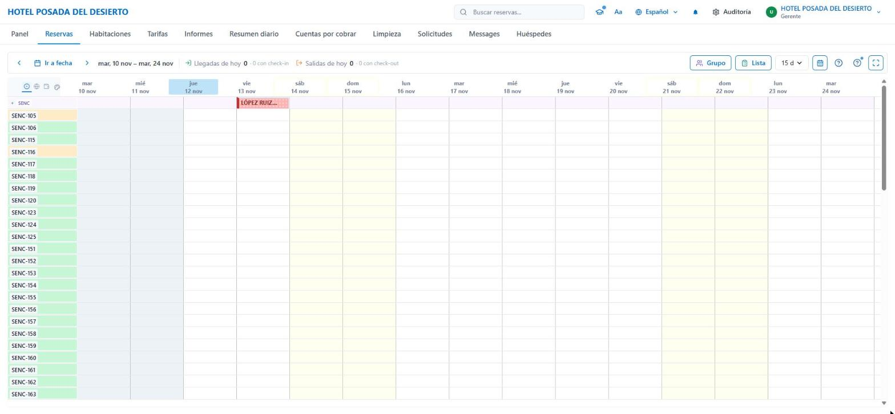

1
Elige la habitación y la noche
Busca la columna de hoy y, en ella, una celda vacía en la fila de la habitación que vas a dar. Haz clic en esa celda.

- 1Pestaña Reservas: abre el Tapechart (Calendario de reservas).
- 2Hoy: su fecha sale en azul. Un cliente sin reserva casi siempre llega para esta noche.
- 3La habitación:
SENC-106sale en verde, así que está limpia y lista para darla. - 4La celda donde se cruzan la habitación y la noche de hoy. Está vacía: se puede vender. Haz clic aquí.
Cuidado: si el número de la habitación sale en naranja, está por limpiar. Elige otra en verde o pregunta a ama de llaves antes de darla.
En tu turno: mientras el cliente te dice cuántas noches quiere, ya puedes ir buscando una habitación verde del tipo que pide.